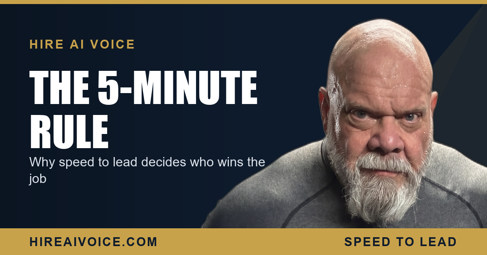

Speed to Lead: Why the First 5 Minutes Decide the Job

The Short Version
- Speed to lead is how fast you respond to a new inquiry. It is the single biggest lever most service businesses have, and most are losing it.
- Respond within 5 minutes and you win the conversation. Wait an hour and the customer has already hired whoever called back first.
- You lose these jobs not on price or quality, but on a phone nobody could pick up while you were working.
- A 24/7 AI voice agent makes your response time effectively zero, and missed-call text-back is the safety net under it.
What Is Speed to Lead?
Speed to lead is how fast your business responds to a new inquiry, measured from the moment a call, form, or text comes in to the moment a real conversation starts. It sounds simple, and that is exactly why it gets ignored. Most owners obsess over their ads, their reviews, and their pricing, and never measure the one number that decides whether any of that ever turns into a paying job.
Here is the uncomfortable truth for any service business in Santa Clarita or Los Angeles County: the customer usually hires whoever answers first. Not the cheapest. Not the most reviewed. The first one to pick up the phone and start solving the problem.
How Fast Should You Respond to a New Lead?
Within 5 minutes. That is not a nice-to-have number, it is the cliff edge. Lead-response research has found the same pattern over and over: respond within 5 minutes and you are dramatically more likely to actually connect and qualify the lead than if you wait even 30 minutes. After about an hour, the odds of a real conversation fall off a cliff, because by then the customer has moved on.
Think about what that means in your own day. A customer with a burst pipe, a dead AC unit, or a tooth that just cracked is not leaving a thoughtful voicemail and waiting patiently. They are calling the next three names on the list until a human answers. The first to answer gets the job.
Why Service Businesses Lose the Speed-to-Lead Race
It is not laziness. It is the nature of the work. The plumber is under a sink. The HVAC tech is on a roof in 100-degree heat. The roofer is on a ladder. The agent is mid-showing. You physically cannot answer every call live, and the calls do not wait for a convenient time. They come in while you are doing the exact work that earns the money.
You did not lose the job on price. You lost it on a phone nobody could pick up.
So the call rolls to voicemail. The customer hangs up, because 62% of callers who hit voicemail simply call your competitor, and 85% never try you again. That lead is gone, permanently, and you never even knew it existed. Multiply that by every busy day, and the leak is enormous. For most service businesses, the biggest source of lost revenue is not marketing spend. It is the calls that already came in and got missed.
How an AI Voice Agent Wins It Automatically
An AI voice agent answers every inbound call the instant it rings, 24 hours a day, whether you are on the job, on another call, or asleep. It greets the caller by your business name, answers their questions, qualifies what they need, and books the appointment on the spot. Your effective response time drops to zero. Nothing rolls to voicemail. No lead waits.
This is the whole point of an AI receptionist that never sleeps: it closes the exact gap that kills service businesses. The customer with the burst pipe at 9 PM does not get your voicemail. They get a warm, instant conversation and a booked appointment, while your competitor's phone is still ringing into the void.
Missed-Call Text-Back: The Safety Net
Even with 24/7 answering, you want a backstop, and that is missed-call text-back. The moment any call is not answered live, the system fires off a text within seconds: "Sorry we missed you, this is [your business], how can we help?" The conversation keeps going instead of ending. The lead stays warm in a text thread instead of dialing the next company. It is the difference between a missed call being a dead end and being the start of a booked job.
What to Do This Week
You do not need a new marketing budget to fix this. You need to stop leaking the leads you already paid for. Three moves:
1. Measure it. For one week, track how many calls you actually answer live versus how many roll to voicemail. The number will shock you, and it is your hidden revenue leak.
2. Put a 24/7 answer in place. An AI voice agent that picks up every call and books the appointment turns your worst response times into your best ones, overnight.
3. Add the text-back safety net, so no missed call ever goes cold.
The businesses winning in Santa Clarita and LA County are not the ones with the biggest ad spend. They are the ones who answer first. Speed to lead is the lever. Pull it.
Make Your Response Time Zero
Our AI voice agent answers every call 24/7, books the job, and follows up automatically. Live in 72 hours. $297/month, no contracts. Or call Sarah, our live agent, and hear it yourself.